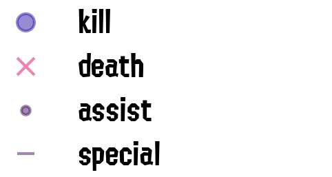
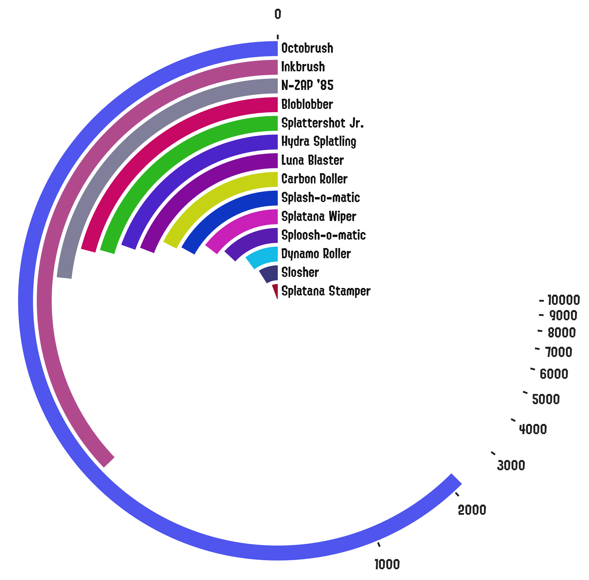
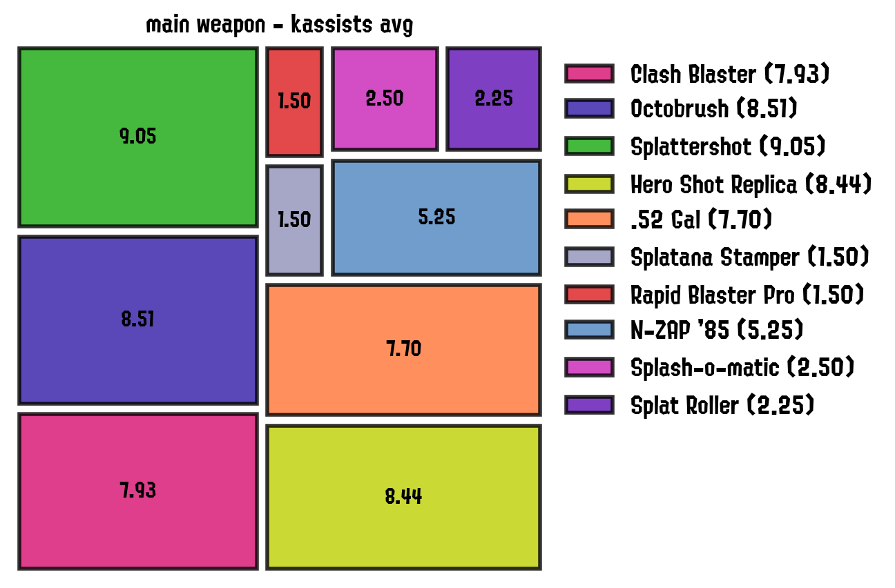
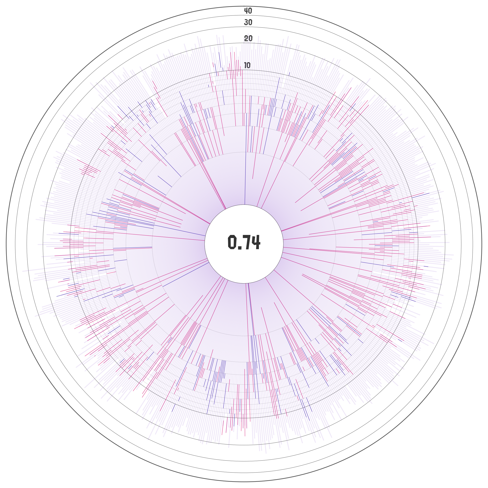
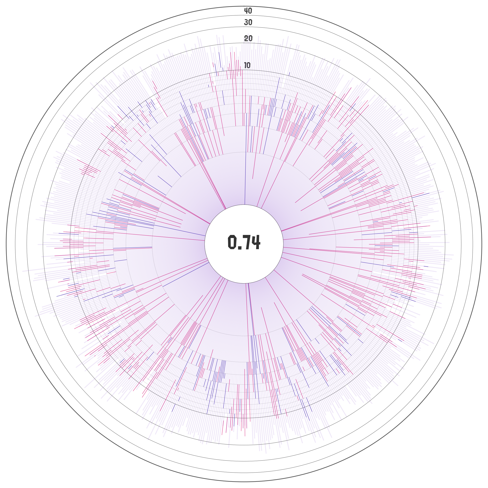
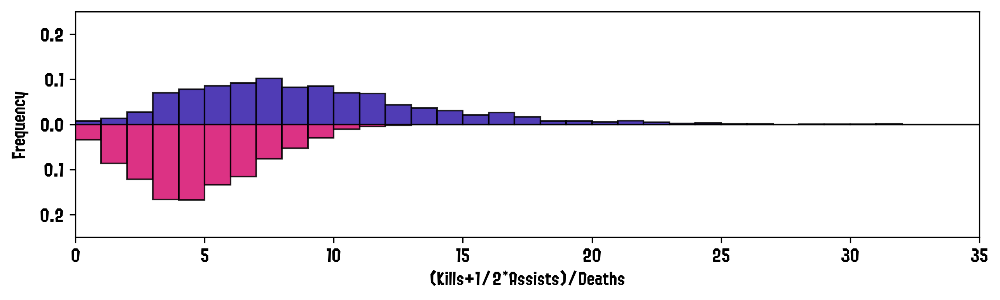

Plots¶
Being able to plot Splatoon data was the initial motivation on creating this package and I’ll try to keep adding useful data visualizations as much as I can.
Matches History Panel¶
This panel is constructed as a panel composed of two different figures. The top one is a detailed breakdown of the statistics of each battle. Each column on the x axis represents a single battle; where the left y axis shows the number of kills, deaths, assists and specials; and the right y axis the turf painted over the match (bars on the plot).

Where the main vertical line between kills and deaths is colored blue for when the number of kills was equal or higher than deaths, and magenta for the other case. Kills, deaths, assists and specials are encoded with the following symbols:
{kind=link}
The bottom panel of the figure is subdivided into three lines. The top one represents the win/lose status of the battle, with the second one showing if the battle resulted in a KO:
{kind=link}
Finally, the bottom row shows the type of match played:
{kind=link}
Have a look at the function’s documentation for more information, and our demo for an example on how to generate it.
Polar Barcharts¶
These plots show breakdown of a given statistic by category shown in a polar barchart (linear or log-scaled).
{kind=link}
{kind=link}
Stats By Match-Type and Stage¶
These barcharts show the frequency of a given statistic broken down by match-type and stage.
{kind=link}

Numbers in the barcharts show the true frequency (if the statistic is a fraction), and the main number in each panel shows the aggregate score amongst all the stages.
Stage/Weapon Stats Treemaps¶
These plots are designed to show which stages are the ones in which the player performs best on any given stage with respect to a selected metric. Auxiliary provided functions generate the statistics dataframe required for these plots, which includes: kills, deaths, win ratio, paint, total matches; amongst many others. These statistics can be also generated for a specific match type (Rainmaker, Turf War, Tower Control, etc), or for a combination of them.
{kind=link}

The functions to generate these treemaps were ultimately extended, so it is also possible to aggregate the stats by other keys such as weapons:
{kind=link}
{kind=link}
Have a look at the function’s documentation for more information, and our demo for an example on how to generate these plots.
Kill to Deaths Iris¶
Similar to the matches history panel, these plots show the kill to death ratios as bars but this time they are arranged in a circular pattern to keep it more compact.
 

{kind=link}
{kind=link}
The radial axis is log-scaled by default with the kill+assist to deaths ratio highlighted at the center of the plot. The first 5 circles in the radial axis are spaced in increments of 1, while the latter ones are spaced in intervals of 10 by default.
Kill VS Deaths Distributions¶
These paired histograms show the frequency distributions of the number of kills or kassists (top, blue), and the number of deaths (bottom, magenta) across matches.
{kind=link}
The x-asis shows the number of kills/deaths per match, while the y axis is either the raw frequency or the density of the quantity in that bin (if the histogram is normalized). Have a look at the function’s documentation for more information, and our demo for an example on how to generate these histograms.
Matches Ranks¶
These plots show the player’s results as compared to the other players in the match (left) and on the player’s team (right).


The x axis is the rank, and the y axis is either the raw frequency of the player being rated that specific rank, or the frequency as a fraction of the total.
Awards BarChart¶
A simple bar chart of the times awards have been given to the player.